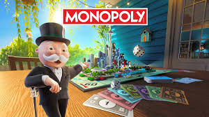
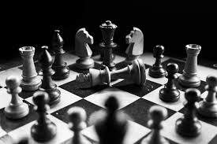
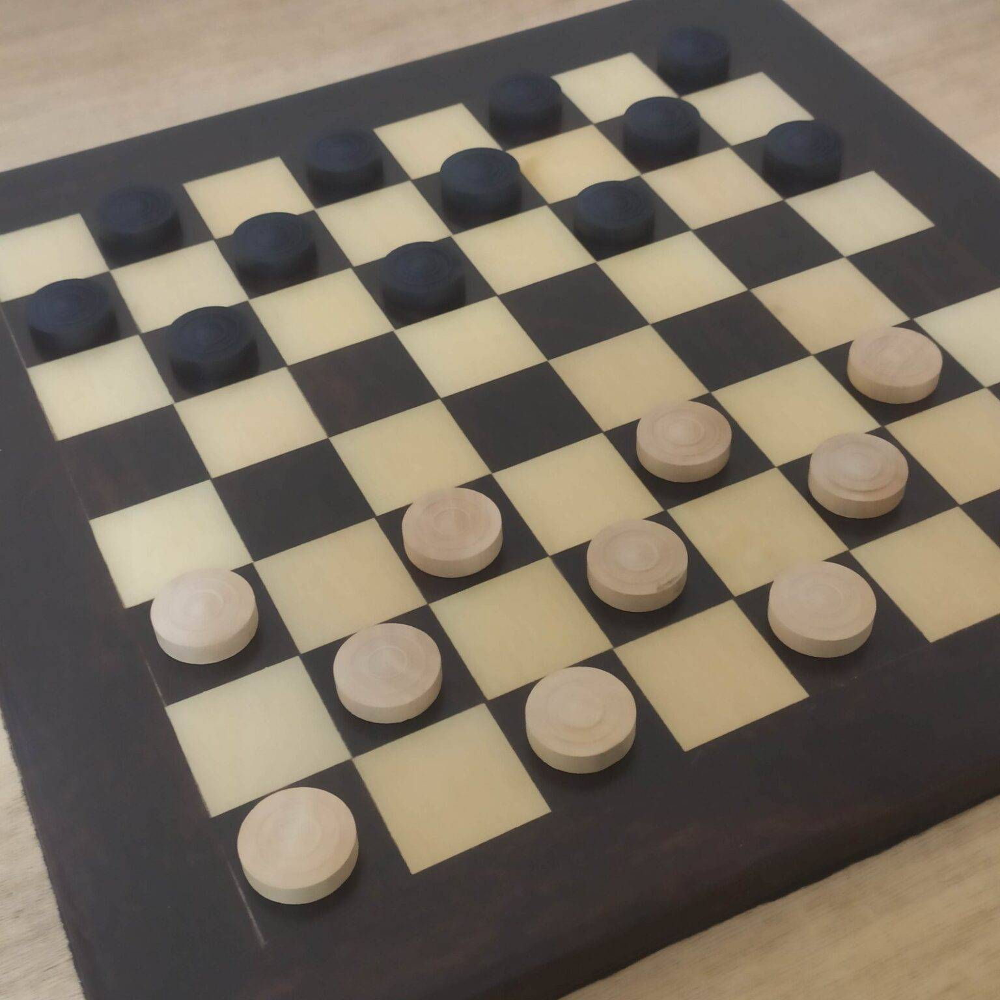

Jogos de Tabuleiro
Monopoly
Monopoly é um jogo de tabuleiro clássico que envolve comprar, negociar e desenvolver propriedades para acumular riqueza e levar os oponentes à falência.
É ideal para reunir amigos e familiares em uma noite.
Xadrez
O Xadrez é um jogo de origens, regras e formatos, mas, o objetivo principal é a vitória de um único rei.
Damas
O jogo de damas é um jogo de tabuleiro estratégico para dois jogadores, onde o objetivo é capturar todas as peças do adversário ou deixá-lo sem movimentos.As peças movimentam-se diagonalmente e podem "comer" as peças inimigas ao pular sobre elas.
